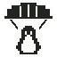

<!doctype html>
<html lang="es"><meta charset="utf-8"><meta name="viewport" content="width=device-width,initial-scale=1"><title>TuxFall · revisión visual de contraste</title><style>body{font:14px monospace;background:#ddd;color:#222;margin:24px}header{display:flex;align-items:center;gap:20px}header img{width:64px;height:64px;image-rendering:pixelated}.scenes{display:grid;grid-template-columns:repeat(auto-fit,minmax(180px,1fr));gap:16px;max-width:1200px}figure{margin:0}canvas{display:block;width:180px;height:260px;image-rendering:pixelated;border:1px solid #555}figcaption{padding:8px 0}</style>
<header><div><h1>Contraste durante todo el ciclo</h1><p>Revisión de desarrollo; no forma parte del build público.</p></div></header><div class="scenes" id="scenes"></div>
<script type="module">
import {createGame} from '../src/model.js';import {render} from '../src/render.js';
for(const [time,direction] of [[0,0],[7.5,0],[14.9,0],[15,0],[22.5,0],[30,0],[37.5,0],[45,0],[45.1,0],[52.5,0],[0,-1],[0,1]]){const figure=document.createElement('figure'),canvas=document.createElement('canvas'),label=document.createElement('figcaption');canvas.width=360;canvas.height=520;label.textContent=direction?`Líneas hacia ${direction<0?'izquierda':'derecha'}`:`Ciclo: ${time} s`;figure.append(canvas,label);document.getElementById('scenes').append(figure);render(canvas.getContext('2d'),{...createGame(),time,distance:time*200,impulse:direction,impulseTime:direction?.16:0,obstacles:[{type:'bird',lane:0,y:300},{type:'plane',lane:1,y:420}]});}
</script></html>
